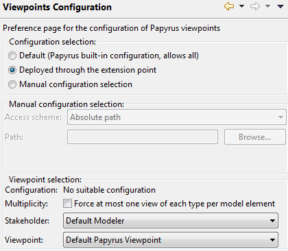
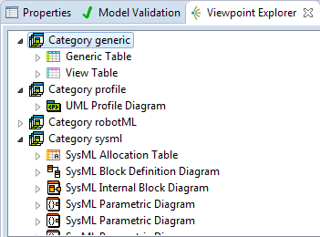
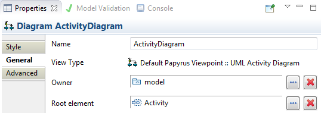

Viewpoints in Papyrus
Introduction
Viewpoints in Papyrus enable the specialization and customization of the user experience by constraining what can be seen and interacted with in Papyrus diagrams and tables. Viewpoints can be used for the following purposes in Papyrus:
- Constrain the set of diagrams and tables that are available to a particular class of users
- Define new kinds of diagrams with custom names, icons, figures and palette in order to implement domain-specific views in Papyrus, based on the classical UML and SysML diagrams.
Configuration Options for Viewpoints
At any given time, there can only be one viewpoint that is currently applied to an Eclipse instance. Users are free to select any viewpoint that is provided to them. Papyrus itself comes with a default viewpoint that is automatically selected when to other viewpoint is specified.
All the viewpoints-related configuration options available to the users are provided in the Papyrus > Viewpoints Configuration preference page of Eclipse:

The first available option is the Configuration selection. It determines how the current viewpoint is selected. The possible options are:
- Default (Papyrus built-in configuration). This option forces the selection of the default viewpoint provided by Papyrus. This default viewpoint exposes all the UML and SysML diagrams and tables implemented in Papyrus and does not restrict their use.
- Deployed through the extension point. This option allows Papyrus to choose the viewpoint with the highest priority provided through the appropriate extension point. This option is typically chosen when 3rd party viewpoints are provided through the extension point. In this way they are automatically applied. When no custom viewpoint is provide through the extension point the default Papyrus viewpoint is applied instead.
- Manual configuration selection. This option allows the user to force the application of a specific viewpoint that is manually selected. When this option is chosen the second part of the preference page becomes available. The appropriate configuration file containing the viewpoint can be selected through 3 possible schemes:
- Absolute path: The absolute path a file in the local file system.
- Workspace file: The selection of a file in the current Eclipse workspace
- Embedded in a plugin: The selection of a file contained within a plugin that has been loaded by the current Eclipse instance.
In the case where multiple viewpoints are available through the current configuration options as explained above the specific viewpoint to be applied can be chosen through the two drop-down lists:
- Stakeholder. The class of user that is associated to a list of possible viewpoints.
- Viewpoint. The viewpoint will be applied. The list is populated based on the Stakeholder field.
In addition, the checkbox Multiplicity can be activated so that at most one diagram or table of the each kind defined in the applied viewpoint can be created for each model element. For example, at most one class diagram per package, etc.
It is possible at any time to see the details of the diagrams and tables offered by the currently used viewpoint in the Viewpoint Explorer view in Eclipse. This view is available in Window > Show View > Other, and then selecting Papyrus > Viewpoint Explorer.

This view summarizes the currently available diagrams and tables, as well as the conditions for their availability.
The application of a viewpoint has some impacts on the following UI elements in Papyrus:
- The diagram selection window in the New Model wizard is populated with only the diagrams and tables that are available in the current viewpoint.
- The New Diagram and New Table contextual menus for the model elements provides only the diagrams and tables that are available in the current viewpoint and are applicable to the currently selected model element. For example, when a UML Activity is selected, the New Diagram context menu will not offer to create a Package diagram, or a class diagram.
- The same holds for the toolbar elements for the creation of diagrams and tables.
- The diagrams properties show the following information:

- View Type is the qualified name of the diagram’s type. It gives an indication of which viewpoint is providing it.
- The Owner attribute is the model element that syntactically contains the diagram in the model explorer. It can be different from the root element.
- The Root element attribute is the model element that is the diagram’s root semantic element.
Definition of New Viewpoints
Papyrus supports the definition of new viewpoints that can subsequently be used by selecting them in the Papyrus Viewpoints preference panel, as presented above. Papyrus viewpoints are defined in configuration files with the ‘.configuration’ extension. They are really just an ECore model that can be edited with the specialized viewpoint configuration editor provided by Papyrus.
Basic Concepts
Viewpoints in Papyrus are implemented as an extension to the ISO 42010 standard for architecture description framework. Hence many concepts presented here are derived from those presented in the ISO 42010 standard. However, the standard has been extended with Papyrus-specific concepts and properties.
- A configuration is a top element of a configuration file. It contains can contains viewpoints specifications, stakeholders, as well as view categories.
- A stakeholder (from ISO 42010) represents in Papyrus an archetype of users. They can be attributed viewpoints, thus defining what users of this kind can see.
- A viewpoint (from ISO 42010) in Papyrus is simply set of views, which can be diagrams or tables.
- A diagram in this context does not represent a single instance (for example the diagram named X in model Y), but the specification (or prototype) of future diagrams of this kind. For example the UML Class Diagram.
- A table is another kind of view in Papyrus that enables the presentation of models in a tabular format.
Walkthrough
The definition of a new viewpoint in Papyrus starts with the creation of a new configuration file: Viewpoint s configuration in the Papyrus folder of the Eclipse new element creation dialog. The top element of the file should be a Papyrus Configuration element.
Step 1: Select the metamodel that is applicable to this configuration. Generally, this should be UML. The metamodel is selected as the metamodel property of the Papyrus Configuration root element. The drop-down value selection is automatically filled with the currently metamodel currently loaded in Eclipse. For UML select, "http://www.eclipse.org/uml2/5.0.0/UML".
Step 2: Add the basic elements. The setting of the elements below is required for the configuration to work correctly.
- Right click on the Papyrus Configuration root element to a new Stakeholder child.
- Give it an appropriate name
- Right click on the Papyrus Configuration root element to a new Viewpoint child.
- Give it an appropriate name
- In the properties of the new stakeholder, add the new viewpoint to the viewpoints property to specify that this stakeholder will have to the specified viewpoint.
- In the properties of the Papyrus Configuration root element, select the new stakeholder in the Default Stakeholder property.
Notes:
- Stakeholder attributes other than viewpoints and name are inherited from the ISO 42010 implementation and are currently not used in Papyrus.
- Viewpoint attributes other than parent and name are inherited from the ISO 42010 implementation and are currently not used in Papyrus.
Step 3: Complete the viewpoint with new diagrams and tables. Those elements can be added by right clicking on the viewpoint element, in the New child menu. Refer to the sections below for more information on the specification of diagrams and tables.
Step 4: Deploy the configuration. The new configuration file can be deployed in an Eclipse plugin and registered through an extension point. The extension point to use is org.eclipse.papyrus.infra.viewpoints.policy.custom. It comes in two flavors that are the possible child elements for it:
- The configuration element lets you register a configuration file and give it a priority. The configuration file is selected with the file property. Giving an URI of the form
platform:/plugin/my.plugin.name/path/myconfig.configuration is a good practice. The priority is a value between 0 and 100, 100 is the highest priority. This value will be used to select the configuration with the highest priority when the user selects the Deployed through the extension point option in the configuration page as explained above. In this mode, the deployed configuration replaces the default Papyrus configuration and its viewpoint. This means that unless the provided viewpoint extends the default one or replicate it, the UML and SysML diagrams and tables will not be available. - The contribution elements lets you specifies a configuration file as an extension of another one. The custom configuration file is selected with the file property. The original property is used to select the configuration file that is extended. To extend the default Papyrus configuration, this value must be
platform:/plugin/org.eclipse.papyrus.infra.viewpoints.policy/builtin/default.configuration. In this mode the custom viewpoints must have the same name as the extended on in the original configuration file. In essence, the diagrams and tables defined in the new custom viewpoint will be available along the one in the original viewpoints, instead of replacing them. This mode is used by RobotML to add the RobotML diagrams to the default Papyrus viewpoint.
Diagram Specification
A diagram has the following attributes:
- A name (required) that is the user-visible name of the diagram. It will appear in the creation menus and property panel.
- An icon (required), as an URI of the form
platform:/plugin/.... - An implementation ID (required) which selects the physical (hard-coded) diagram in Papyrus that will be used as a base. The possible values for this property are summarized in the following table.
- An optional parent that specifies a parent viewpoint-defined diagram to inherit from. Essentially, the inheriting diagram will defer to its parent’s rules (see below) when its own are not sufficient to take a decision.
- An optional list of profiles that must be applied on the model for this diagram to be available. The possible values are automatically populated from the loaded EPackages.
- An optional custom style as an URI of the form
platform:/plugin/.... It must point to a CSS file that will then be automatically applied to the diagram. - An optional custom palette as an URI of the form
platform:/plugin/.... It must point a palette definition in XML that will be automatically applied to the diagram. - Other attributes are inherited from the ISO 42010 implementation and are currently not used in Papyrus.
| Implementation ID | Description |
|---|
| PapyrusUMLActivityDiagram | UML Activity Diagram |
| PapyrusUMLClassDiagram | UML Class Diagram |
| PapyrusUMLCommunicationDiagram | UML Communication Diagram |
| PapyrusUMLComponentDiagram | UML Component Diagram |
| CompositeStructure | UML Composite Diagram |
| PapyrusUMLDeploymentDiagram | UML Deployment Diagram |
| PapyrusUMLProfileDiagram | UML Profile Diagram |
| PapyrusUMLSequenceDiagram | UML Sequence Diagram |
| PapyrusUMLStateMachineDiagram | UML State Machine Diagram |
| PapyrusUMLTimingDiagram | UML Timing Diagram |
| UseCase | UML Use Case Diagram |
| PapyrusUMLInteractionOverviewDiagram | UML Interaction Overview Diagram |
| BlockDefinition | SysML Block Definition Diagram |
| InternalBlock | SysML Internal Block Diagram |
| Parametric | SysML Parametric Diagram |
| RequirementDiagram | SysML Requirements Diagram |
Once a diagram has been created it is possible to constraint it using rules. There are four kinds of rules:
- Model rules constrain the type of the (root) model elements that can be visualized through this view. Hence model rules control what model elements can be selected for the Root element property of the diagrams, as shown in the capture below.
- Owning rules constrain the type of the model elements that can own the diagram itself. In practice this materializes as the type of model elements under which the diagrams can appear in the model explorer. Owning rules control what model elements can be selected for the Owner property of the diagrams, as shown in the capture below.
- Child rules constrain the type of the model elements that can be dropped within this diagram.
- Palette rules constrain the display of the diagram's palette elements.
Each rule has a permit property that specify whether the rule authorizes or forbids the action it represents. Otherwise, the properties of the rules are as follow:
- Model rules
- element (required) represents the type of the model elements to apply the rule on.
- multiplicity (required, default is -1) represents the maximum number of this kind of diagram that can be created for the referenced model element. -1 represents an unbounded number.
- stereotypes represents the set of stereotypes that must be applied in the model element for the rule to match. The stereotypes can be picked from the classifiers of the profiles defined in the parent diagram.
- Owning rules
- element (required) represents the type of the model elements to apply the rule on.
- multiplicity (required, default is -1) represents the maximum number of this kind of diagram that can be created for the referenced model element. -1 represents an unbounded number.
- stereotypes represents the set of stereotypes that must be applied in the model element for the rule to match. The stereotypes can be picked from the classifiers of the profiles defined in the parent diagram.
- Child rules
- element (required) represents the type of the model elements begin dropped.
- stereotypes represents the set of stereotypes that must be applied in the model element for the rule to match. The stereotypes can be picked from the classifiers of the profiles defined in the parent diagram.
- origin (required) represents the type of the model elements that are the target of the drop. It is usually one of the type defined in the model rules.
- Additionally, child rules can be completed with children called path elements using the New Child contextual menu. Path elements defines a path of properties that must be used from the origin to insert the new element in the model.
- Palette rules
- element (required) represents a pattern to match for the identifier of a palette element.
- If the value ends with '*', it will match any palette element with the prefix specified before the '*'.
- If the value is '*', it will match any palette element.
The minimal required rules for a diagram specification to work are:
- A model rule that allows the diagram to be created for a model element. For example, a model rule with element set to UML Package, multiplicity to -1 and permit to true; meaning this diagram can be created for UML Packages and an unlimited number of diagrams can be created for each UML Package.
- An owning rule that allows the diagram to be owned by a model element (appear under an element in the model explorer). For example, an owning rule with element set to UML Package, multiplicity set to -1 and permit to true; meaning an unlimited number of diagrams of this kind can be placed under each UML Package element in the model explorer.
- A child rule that allows the dropping of any element in the diagram, expressed with the permit attribute set to true and other attributes left empty.